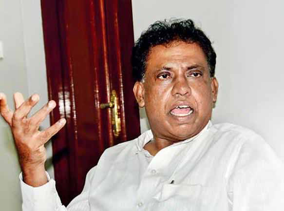
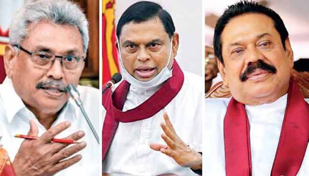

The Common Tamil Candidate Joke Laughing All the Way to the Polls:
The Common Tamil Candidate Joke Laughing All the Way to the Polls:
Jaffna Monitor hellojaffnamonitor@gmail.com 5 The debate surrounding the proposition of a 'common Tamil candidate in the upcoming presidential election' is gathering intense discussion across various platforms. Let's delve into the historical context to understand the implications by examining past presidential elections involving Tamil candidates. In 1978, Sri Lanka marked a pivotal moment with a sweeping constitutional change that ushered in an executive presidential system. The first election under this new regime took place in 1982. Mr. Kumar Ponnambalam of the All Ceylon Tamil Congress threw his hat in the ring with the bold proclamation, "Tamil Nation is a separate nation." Despite the powerful slogan, the election results told a harsh tale. Kumar garnered 173,934 votes, a mere 2.67% of the national vote, relegating him to fourth place. The victor of the election was J.R. Jayewardene of the United National Party, with Hector Kobbekaduwa of the Sri Lanka Freedom Party and Rohana Wijeweera of the Janatha Vimukthi Peramuna securing the second and third spots, respectively. Yet, the narrative shifted in Jaffna, where Kumar captured a significant 40% of the vote, showcasing a stark contrast in regional support. When Kumar declared his run for the presidency, journalists sought The Common Tamil Candidate Joke Laughing All the Way to the Polls: By: David Ignatius Jaffna Kumar Ponnambalam Sivajilingam

Jaffna Monitor hellojaffnamonitor@gmail.com 6 insights from Mr. Amirthalingam, secretary of the Tamil United Liberation Front (TULF). He sharply criticized the move, stating, "My alliance does not resort to such cheap tactics," and urged the Tamil populace to boycott the presidential election. Furthermore, TULF, alongside leftist Tamil parties, accused Mr. Kumar of entering the fray merely to siphon Tamil votes away from J.R. Jayewardene, inadvertently aiding in his electoral triumph. The notion of a common Tamil candidate for president made a comedic comeback in the 2019 presidential election. After breaking ties with TULF and TELO, the ever-controversial Mr. Sivajilingam decided to go solo, throwing his hat into the presidential ring as an independent. He managed to scrape together just 0.09 percent of the votes (a whopping 12,256), turning his serious political bid into more of an election jest. Ironically, the Rajapaksas ultimately reaped the benefits from Mr. Sivajilingam's bid, as his presence in the race played into their strategic interests. Reflecting on the outcomes of these two elections, particularly after the 1977 racial riots when Tamil aspirations for liberation were at their zenith, the voters in Jaffna District chose to defy the TULF's boycott call and cast their ballots for Kumar Ponnambalam. Despite this local support, Kumar struggled to garner substantial backing from Tamils residing beyond the Northern and Eastern provinces. In the 2019 eighth presidential election, Mr. 's bid as a Tamil candidate was resoundingly dismissed by Tamil voters from all regions. At the same time, the Tamil community's opposition to the Rajapaksas translated into robust support for Mr. Sajith Premadasa in the North, East, and Central Highlands, where he claimed notable victories. Amidst the election fervor, suspicions surfaced about Mr. Sivajilingam possibly colluding with the Rajapaksas. These doubts were fueled by observations from political analysts who pointed out that Sinhala-language media outlets, known for their pro-Rajapaksa stance, frequently featured Mr. Sivajilingam's fiery interviews on Tamil nationalism. Such coverage was seen as a tactic to stoke Sinhala nationalism, which, in turn, is believed to have bolstered the Rajapaksas' electoral stronghold. In the 2019 eighth presidential election, Tamil voters came to a sobering realization: "A Tamil Gotabaya Rajapaksa, Basil Rajapaksa and Mahinda Rajapaksa

Jaffna Monitor hellojaffnamonitor@gmail.com 7 cannot achieve anything in the presidential election." The decision to field a common Tamil candidate risked splitting the Tamil vote. As a result, the next president would likely ascend to power predominantly with Sinhalese support, further widening the divide between the Colombo leadership and the Tamil populace. This dynamic risked diminishing the national sentiments of the Tamils. Therefore, the Tamil people and those genuinely fighting for Tamil rights must avoid falling into these deceptive tactics of fielding a common candidate. They should completely reject any moves to field a Tamil common candidate in the upcoming presidential elections, recognizing these strategies as potentially undermining their struggle for genuine autonomy and rights. According to the current political situation in Southern Sri Lanka, the major parties and primary candidates appear evenly matched, creating a scenario where neither a Southern party nor leader can win a majority of votes on their own. The majority of people openly admit that the decision of who will become the president rests in the hands of minorities. In such a decisive moment, Tamils can decide who they want as the winning president and take part in the victory. In the previous presidential election, the Rajapaksas reportedly utilized Mr. Sivajilingam to secure a victory. It is anticipated that this time, too, a Southern presidential candidate supported by the Rajapaksas might indirectly promote a Tamil candidate to gather Sinhala nationalist votes in the South. Similarly, regional dominance and efforts to prevent Tamils in Sri Lanka from emerging as a decisive force are expected to be vigorously pursued. This tactic underscores the strategic manipulation in the political landscape, where the Rajapaksas might use the facade of diversity and minority inclusion to consolidate the Sinhala nationalist base, thereby weakening the Tamil position and fragmenting their votes. This scenario necessitates a critical and strategic response from the Tamil community to counteract these maneuvers and to leverage their collective voting power to influence significant political outcomes. Moreover, politicians who resist forming a common Tamil alliance during parliamentary elections yet advocate loudly for a common candidate in presidential races often expose their true motives and the interests they represent when their facades drop in such critical moments. This scenario highlights the urgent need for strategic unity and clear direction among Tamil parties, enabling them to effectively wield their political influence to secure significant advances in governance and rights. Sri Lankan Tamils should fortify their stance through a strategic plan that entails backing a Tamil-friendly and viable presidential candidate. This strategy demands active engagement in central political processes to steer policy and governance reforms. By synchronizing these initiatives, Tamils can better ensure that their political and administrative demands are met more cohesively and effectively. If some Tamil leaders imprudently push for a common Tamil candidate in the presidential election, it would not only be seen as a farcical move but also aid Sinhala chauvinistic parties in using this as a tool to solidify the Sinhala majority votes. It is crucial that Tamils avoid this mistake.